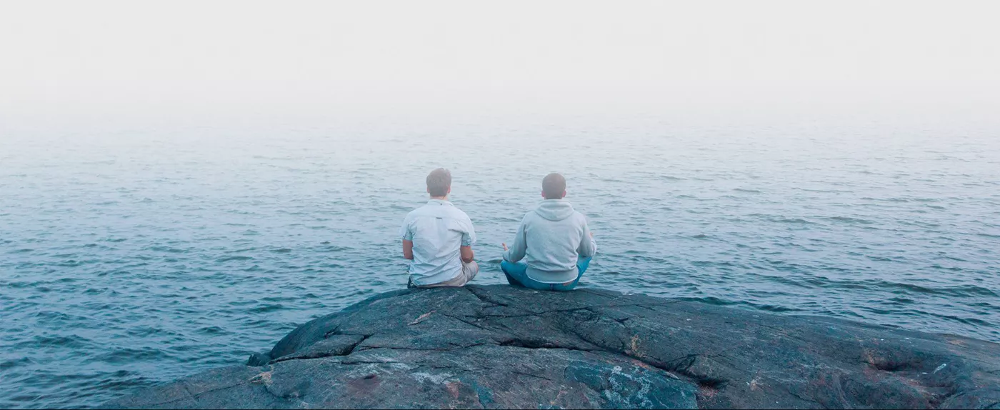
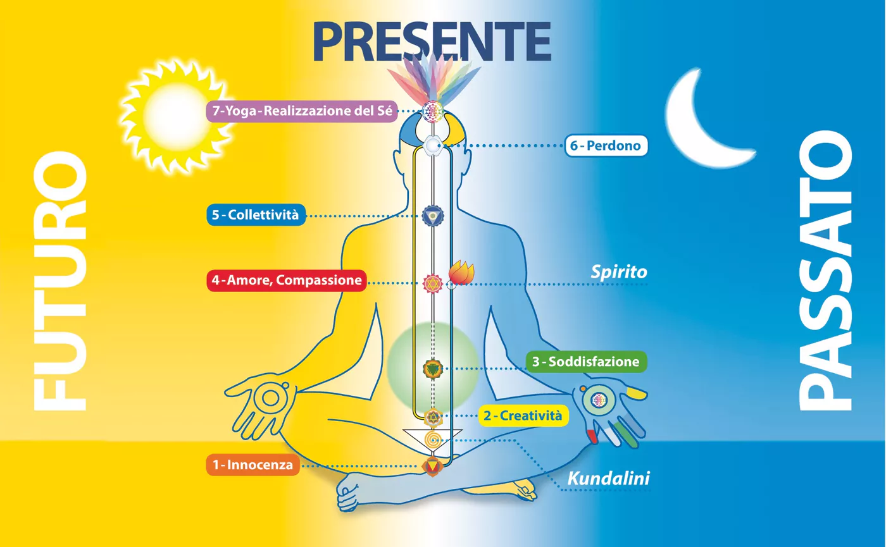

Silenzio interiore
Si sperimenta la consapevolezza senza pensieri: la mente si calma e si vive pienamente il momento presente.

Scopri la pace interiore e il silenzio della mente. Una meditazione semplice, per tutti, che si integra nella vita di ogni giorno — qui a Trieste.
Sahaja Yoga è un metodo di meditazione che, pur avendo radici antichissime, sintetizza una conoscenza millenaria in tecniche di facile apprendimento, applicabili subito nella vita di tutti i giorni.
“Sahaja” in sanscrito significa spontaneo, nato con noi; “Yoga” significa unione. È l’unione spontanea con la parte più profonda di noi stessi: lo Spirito.
Cos’è Sahaja Yoga
Chi pratica Sahaja Yoga con regolarità racconta di cambiamenti concreti, giorno dopo giorno.
Si sperimenta la consapevolezza senza pensieri: la mente si calma e si vive pienamente il momento presente.
Meno stress e più energia. La meditazione aiuta a ritrovare equilibrio fisico, mentale ed emotivo.
Crescono pazienza, gioia e compassione: qualità che si riflettono in famiglia, al lavoro e con gli altri.
Nel 1970 Shri Mataji ha scoperto un metodo per rendere possibile il risveglio della Kundalini a livello di massa, in modo spontaneo, a tutti coloro che lo desiderano.
Ha dedicato la sua vita a diffondere questa esperienza nel mondo, senza mai chiedere nulla in cambio, portando una vera trasformazione nelle persone e nella società in cui vivono.
Scopri la sua vitaNon puoi conoscere il significato della tua vita finché non sei connesso al potere che ti ha creato.Shri Mataji Nirmala Devi
Non serve esperienza, né una posizione particolare. Bastano un luogo tranquillo e il desiderio sincero di conoscere se stessi.
Per la meditazione guidata completa, con le istruzioni per la realizzazione del Sé, puoi seguire il percorso sul sito nazionale oppure venire a un nostro incontro: ti accompagniamo passo dopo passo.
Su una sedia o per terra, con la schiena dritta. Togli le scarpe e appoggia le mani sulle ginocchia, palmi rivolti verso l’alto.
Lascia andare le preoccupazioni. Non devi sforzarti di smettere di pensare: osserva semplicemente, senza giudicare.
Resta in silenzio per qualche minuto. Molte persone percepiscono una leggera brezza fresca sui palmi delle mani o sopra la testa.
Incontri settimanali a Trieste, corsi introduttivi e meditazione online. Sempre gratuiti, aperti a tutti.